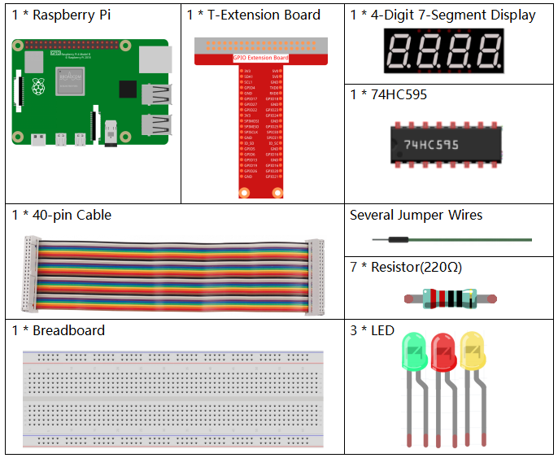

Note
Bonjour, bienvenue dans la communauté SunFounder Raspberry Pi & Arduino & ESP32 Enthusiasts sur Facebook ! Plongez au cœur de Raspberry Pi, Arduino et ESP32 avec d’autres passionnés.
Pourquoi nous rejoindre ?
Support d’experts : Résolvez vos problèmes après-vente et relevez les défis techniques avec l’aide de notre communauté et de notre équipe.
Apprenez et partagez : Échangez des astuces et des tutoriels pour améliorer vos compétences.
Aperçus exclusifs : Accédez en avant-première aux annonces de nouveaux produits et aux aperçus exclusifs.
Réductions spéciales : Bénéficiez de réductions exclusives sur nos produits les plus récents.
Promotions festives et cadeaux : Participez à des concours et à des promotions spéciales lors des fêtes.
👉 Prêt à explorer et créer avec nous ? Cliquez sur [Ici] et rejoignez-nous dès aujourd’hui !
3.1.7 Feu de Signalisation
Introduction
Dans ce projet, nous allons utiliser des LED de trois couleurs pour simuler le changement des feux de signalisation. Un affichage à 4 chiffres de type 7 segments sera également utilisé pour afficher le compte à rebours de chaque état de signalisation.
Composants Nécessaires
Pour ce projet, nous aurons besoin des composants suivants.
{kind=link}
Schéma de Montage
T-Board Name |
physical |
wiringPi |
BCM |
GPIO17 |
Pin 11 |
0 |
17 |
GPIO27 |
Pin 13 |
2 |
27 |
GPIO22 |
Pin 15 |
3 |
22 |
SPIMOSI |
Pin 19 |
12 |
10 |
GPIO18 |
Pin 12 |
1 |
18 |
GPIO23 |
Pin 16 |
4 |
23 |
GPIO24 |
Pin 18 |
5 |
24 |
GPIO25 |
Pin 22 |
6 |
25 |
SPICE0 |
Pin 24 |
10 |
8 |
SPICE1 |
Pin 26 |
11 |
7 |

Procédures Expérimentales
Étape 1 : Montez le circuit.

Étape 2 : Changez de répertoire.
cd ~/davinci-kit-for-raspberry-pi/python-pi5
Étape 3 : Exécutez le programme.
sudo python3 3.1.7_TrafficLight.py
Une fois le code exécuté, les LED simuleront le changement des feux de signalisation. D’abord, la LED rouge s’allume pendant 60 secondes, puis la LED verte pendant 30 secondes ; ensuite, la LED jaune s’allume pendant 5 secondes. Après cela, la LED rouge se rallume pendant 60 secondes. Cette série d’actions se répétera indéfiniment. En même temps, l’affichage à 4 chiffres de type 7 segments affichera le compte à rebours en continu.
Code
Note
Vous pouvez Modifier/Réinitialiser/Copier/Exécuter/Arrêter le code ci-dessous. Mais avant cela, vous devez vous rendre dans le chemin source, comme davinci-kit-for-raspberry-pi/python-pi5. Après avoir modifié le code, vous pouvez l’exécuter directement pour voir l’effet.
#!/usr/bin/env python3
from gpiozero import OutputDevice, LED
import threading
# Configuration des broches GPIO pour le registre à décalage 74HC595
SDI = OutputDevice(24) # Entrée de données série
RCLK = OutputDevice(23) # Horloge de registre
SRCLK = OutputDevice(18) # Horloge de registre de décalage
# Configuration des broches GPIO pour la sélection des chiffres sur l'affichage 7 segments
placePin = [OutputDevice(pin) for pin in (10, 22, 27, 17)]
# Codes des segments pour les chiffres 0 à 9 sur l'afficheur 7 segments
number = (0xc0, 0xf9, 0xa4, 0xb0, 0x99, 0x92, 0x82, 0xf8, 0x80, 0x90)
# Configuration des broches GPIO pour les LED du feu de signalisation
ledPinR = LED(25) # LED rouge
ledPinG = LED(8) # LED verte
ledPinY = LED(7) # LED jaune
# Paramètres de durée pour chaque phase du feu de signalisation
greenLight = 30
yellowLight = 5
redLight = 60
# Noms des couleurs des feux
lightColor = ("Red", "Green", "Yellow")
# Variables d'état initialisées
colorState = 0
counter = 60
timer1 = None
def setup():
""" Initialize the traffic light system and start the timer. """
global timer1
timer1 = threading.Timer(1.0, timer)
timer1.start()
def clearDisplay():
""" Clear the 7-segment display. """
for _ in range(8):
SDI.on()
SRCLK.on()
SRCLK.off()
RCLK.on()
RCLK.off()
def hc595_shift(data):
""" Shift data to the 74HC595 shift register for digit display. """
for i in range(8):
SDI.value = 0x80 & (data << i)
SRCLK.on()
SRCLK.off()
RCLK.on()
RCLK.off()
def pickDigit(digit):
""" Select a specific digit to display on the 7-segment display. """
for pin in placePin:
pin.off()
placePin[digit].on()
def timer():
""" Handle the timing for traffic light changes. """
global counter, colorState, timer1
timer1 = threading.Timer(1.0, timer)
timer1.start()
counter -= 1
if counter == 0:
counter = [greenLight, yellowLight, redLight][colorState]
colorState = (colorState + 1) % 3
print(f"counter : {counter} color: {lightColor[colorState]}")
def lightup():
""" Update the traffic light LED based on the current state. """
global colorState
ledPinR.off()
ledPinG.off()
ledPinY.off()
[ledPinR, ledPinG, ledPinY][colorState].on()
def display():
""" Display the current counter value on the 7-segment display. """
global counter
for i in range(4):
digit = counter // (10 ** (3 - i)) % 10
if i == 0 and digit == 0:
continue
clearDisplay()
pickDigit(3 - i)
hc595_shift(number[digit])
def loop():
""" Main loop to continuously update display and lights. """
while True:
display()
lightup()
def destroy():
""" Clean up resources when the script is terminated. """
global timer1
timer1.cancel()
ledPinR.off()
ledPinG.off()
ledPinY.off()
try:
setup()
loop()
except KeyboardInterrupt:
destroy()
Explication du Code
Importe les classes
OutputDeviceetLEDde la bibliothèque gpiozero, permettant de contrôler des dispositifs de sortie généraux et spécifiquement des LED. Importe le module de threading de Python, utilisé pour créer et gérer des threads pour l’exécution simultanée.#!/usr/bin/env python3 from gpiozero import OutputDevice, LED import threading
Initialise les broches GPIO connectées aux entrées du registre à décalage : Entrée de données série (SDI), Horloge de registre (RCLK), et Horloge de décalage (SRCLK).
# Configuration des broches GPIO pour le registre à décalage 74HC595 SDI = OutputDevice(24) # Entrée de données série RCLK = OutputDevice(23) # Horloge de registre SRCLK = OutputDevice(18) # Horloge de registre de décalage
Initialise les broches pour chaque chiffre de l’affichage 7 segments et définit les codes binaires correspondant aux chiffres de 0 à 9.
# Configuration des broches GPIO pour la sélection des chiffres sur l'affichage 7 segments placePin = [OutputDevice(pin) for pin in (10, 22, 27, 17)] # Codes des segments pour les chiffres 0-9 sur l'affichage 7 segments number = (0xc0, 0xf9, 0xa4, 0xb0, 0x99, 0x92, 0x82, 0xf8, 0x80, 0x90)
Initialise les broches GPIO pour les LED rouge, verte et jaune utilisées dans la simulation des feux de signalisation. Définit la durée (en secondes) pour chaque état de couleur dans le système de feux de signalisation et nomme chaque couleur de feu pour référence.
# Configuration des broches GPIO pour les LED du feu de signalisation ledPinR = LED(25) # LED rouge ledPinG = LED(8) # LED verte ledPinY = LED(7) # LED jaune # Paramètres de durée pour chaque phase du feu de signalisation greenLight = 30 yellowLight = 5 redLight = 60 # Noms des couleurs des feux lightColor = ("Red", "Green", "Yellow")
Initialise les variables pour suivre l’état actuel des couleurs, un compteur pour la temporisation et un espace réservé pour un objet de minuteur.
# Initialisation des variables d'état colorState = 0 counter = 60 timer1 = None
Initialise le système de feux de signalisation et démarre le thread du minuteur.
def setup(): """ Initialize the traffic light system and start the timer. """ global timer1 timer1 = threading.Timer(1.0, timer) timer1.start()
Fonctions pour contrôler l’affichage 7 segments.
clearDisplayéteint tous les segments,hc595_shifttransfère les données dans le registre à décalage etpickDigitactive un chiffre spécifique sur l’affichage.def clearDisplay(): """ Clear the 7-segment display. """ for _ in range(8): SDI.on() SRCLK.on() SRCLK.off() RCLK.on() RCLK.off() def hc595_shift(data): """ Shift data to the 74HC595 shift register for digit display. """ for i in range(8): SDI.value = 0x80 & (data << i) SRCLK.on() SRCLK.off() RCLK.on() RCLK.off() def pickDigit(digit): """ Select a specific digit to display on the 7-segment display. """ for pin in placePin: pin.off() placePin[digit].on()
Gère le minutage pour les changements de feux de signalisation et met à jour le compteur et l’état des couleurs.
def timer(): """ Handle the timing for traffic light changes. """ global counter, colorState, timer1 timer1 = threading.Timer(1.0, timer) timer1.start() counter -= 1 if counter == 0: counter = [greenLight, yellowLight, redLight][colorState] colorState = (colorState + 1) % 3 print(f"counter : {counter} color: {lightColor[colorState]}")
Met à jour l’état des LED du feu de signalisation en fonction de l’état de couleur actuel.
def lightup(): """ Update the traffic light LED based on the current state. """ global colorState ledPinR.off() ledPinG.off() ledPinY.off() [ledPinR, ledPinG, ledPinY][colorState].on()
Calcule le chiffre à afficher sur chaque segment de l’affichage 7 segments et le met à jour en conséquence.
def display(): """ Display the current counter value on the 7-segment display. """ global counter for i in range(4): digit = counter // (10 ** (3 - i)) % 10 if i == 0 and digit == 0: continue clearDisplay() pickDigit(3 - i) hc595_shift(number[digit])
Boucle principale qui met à jour en continu l’affichage et les LED du feu de signalisation.
def loop(): """ Main loop to continuously update display and lights. """ while True: display() lightup()
Libère les ressources lorsque le script est terminé, comme éteindre les LED et arrêter le thread du minuteur.
def destroy(): """ Clean up resources when the script is terminated. """ global timer1 timer1.cancel() ledPinR.off() ledPinG.off() ledPinY.off()